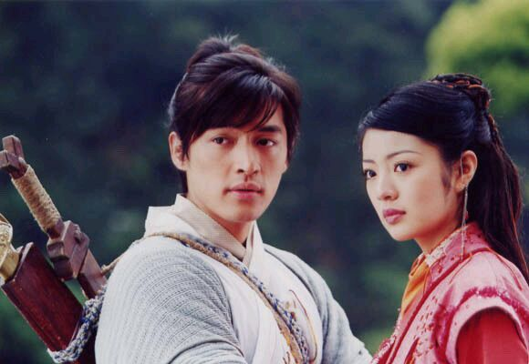

十年前，山顶上的六个人对着星空大声的喊出的自己的理想
从此他们开始为了自己的理想迸发，也从那年开始，他们各奔东西、历经磨难。
在人生的每个阶段都有陪伴自己的人，但总免不了各奔东西。
儿时的玩伴或因搬家而走散，读书时要好的朋友也因考上不同的学校而开始疏远，情人总是分分合合，即便是伴侣也有一人会先离去。
陪你走过这一世的分分秒秒，只有你自己。
所以我经常会告诫自己：要认清自己，不要害怕犯错，人都是从各种错误中发现自己真正想要的。 要活好当下，在不伤害爱你的人的前提下，排除万难的活在自己想要的世界里，千万别逐众线路，也千万不要被无常的未来所困扰。
以前翻译的 Being Erica 里 Dr. Tom 曾 Quote 过这句话，便是现今引导着我的准则了。
Do not dwell in the past, do not dream of the future, concentrate yourself in the present。
「不牵绊过往，不寄梦未来，活好当下」
对于爱情，人们往往希望自己能像灵儿一般，倍受逍遥哥哥的宠爱，然而现实在找到那位陪你走过余生的他之前，往往是大家都不得不扮演着林月如的角色。
虽然月如最终没有和李逍遥在一起，但是她却收获了灵儿永远也得不到的情感，介乎朋友与爱之间的「喜欢」。她成功的在逍遥心中占据了一块位置，一块让你觉得少了会不习惯的位置，我想大概这样也足够了。
因为你总要试着习惯你眼中看到的和现实看到的是不同的两样东西。时间有长有短，有的感情持续半个世纪，有的感情在几年后戛然而止，然后却能让人回味一生。
不管是好是坏，是苦是甜，难捱还是快乐，都要学会接受，因为接受是变好的开始。
于自己而言，不管你现在是如日中天，还是桑榆暮景，都要明白世事的无常，从而感谢上天给你的每一个际遇，让你的这一刻独一无二，无法复制。
